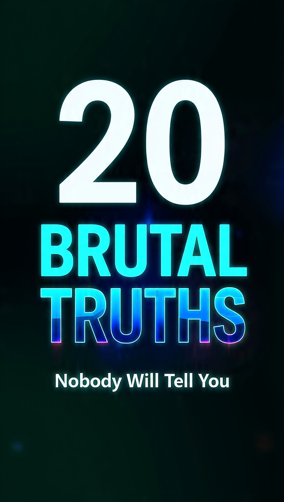

← Back to Home
20 Brutal Truths Nobody Will Tell You

Published on: 24 July 2026 | By Unique Piece India
Part 1: Nobody Cares About You
I spent 6 months making the "perfect" post.
2 likes. One was my mom.
That day I learned: The world doesn't owe you attention.
People are busy with their own problems. Your failure, your success, your new haircut - nobody cares.
And that's actually good news. Because it means you're free.
Free to start ugly. Free to fail. Free to post cringe.
Stop waiting for applause. Start for yourself.
When you stop seeking validation, you start building real things.
So post it. Launch it. Say it.
Even if only 3 people see it. Those 3 matter.
Nobody cares... until you become impossible to ignore.
Part 2: Discipline Beats Motivation
Motivation feels amazing. But it’s a liar. It shows up on Monday and leaves by Wednesday.
I built my entire early business on motivation. Then I crashed. Hard.
Discipline is different. Discipline is showing up when you don’t feel like it. It’s writing when you’re tired. It’s working when no one is watching.
I stopped asking "Do I feel like it?" and started asking "Did I do it today?"
I created non-negotiables: 1 hour of deep work every morning. No phone. No excuses.
Motivation gets you started. Discipline keeps you going for 10 years.
Systems beat willpower. Environment beats motivation. If you want to win, design your life so winning is the default.
Part 3: Your Circle Becomes You
You are the average of the 5 people you spend the most time with. Harsh but true.
I used to hang out with people who complained about money, blamed the government, and watched Netflix all day. Guess what I was doing too.
When I changed my circle, my life changed. I started talking to builders, creators, people who read books and took risks.
It was lonely at first. I lost friends. But I gained a future.
Protect your energy. Protect your time. Protect your circle. Because your circle becomes your ceiling.
Part 4: Fail Loudly, Learn Quickly
I failed 9 times before I got my first real win. And that one win paid for all 9 failures ten times over.
But for 2 years, I hid those 9 failures. I only posted the highlights. I only talked about the good days.
And you know what happened? Nothing. Because people don’t connect with perfect. They connect with real.
We live in a world that worships overnight success. But no one tells you about the 364 nights before that "overnight".
I launched a product that made $0. I ran ads that burned money. I wrote blogs that got 3 views - and 2 of them were me.
I sent 50 cold emails. 49 ignored me. 1 person replied "unsubscribe".
I was embarrassed. I thought failure meant I was not good enough. So I quit. For 3 months.
And in those 3 months, I watched other people who were failing even louder than me... win.
They were posting their mistakes. They were sharing what didn’t work. They were building in public.
That’s when it clicked: Failure is not the opposite of success. Failure is part of success.
The moment I started failing loudly, everything changed.
I made a post: "I wasted 20,000 rupees on ads. Here’s what I learned." It got 10x more reach than any "success" post I ever made.
I made a video: "My website crashed on launch day." People commented "Thank you for being honest."
Because here’s the truth no one tells you:
1. **Fail Fast**: Don’t spend 1 year perfecting something no one wants. Launch in 1 week. If it fails, you learned in 7 days instead of 365.
2. **Fail Cheap**: Don’t bet your life savings on idea #1. Test small. 1000 rupees. 10 customers. 1 page. If it works, scale. If not, pivot.
3. **Fail Forward**: Every failure has a tuition fee and a lesson inside it. My failed ads taught me copywriting. My crashed website taught me backups. My ignored emails taught me how to write subject lines.
The most successful people I know have the biggest graveyard of failed projects.
Jeff Bezos had Fire Phone. Steve Jobs got fired from Apple. JK Rowling got 12 rejections.
The difference? They didn’t stop at failure #9.
So here is my challenge to you: Go fail this week.
Post something and let it flop. Pitch someone and get a "no". Launch something and get 0 sales.
Then write down 3 lessons from it and do it again, but better.
People will respect you more for your scars than for your trophies.
Remember this: The only real failure is quitting. Everything else is just data.
Fail loudly. Learn quickly. And keep going.
Part 5: Health Is Your Real Wealth
Two years ago, I made my first 1 lakh rupees from my website. I was celebrating. Pizza, cold drink, 3 AM work.
One month later, I was in a hospital bed with severe acidity, back pain, and panic attacks.
The doctor looked at me and said 5 words that changed my life: "Beta, paisa baad me kamana."
That day I realized something brutal: You can have money, fame, followers, and a business.
But if your body gives up, none of it matters. You can’t enjoy the money from a hospital bed.
We chase success like it’s the finish line. But health is the track. Without the track, you can’t even run the race.
I was 24 and my body was acting like 50. Why?
Because I thought "sleep is for later", "gym is a waste of time", "water? I’ll drink coffee instead."
I traded my health for hustle. And the bill came due.
So I made a new rule: My first meeting every day is with myself. Not with clients. Not with emails. With my body.
Here are the 5 non-negotiables that saved me. And they will save you too:
**1. Sleep is Not Lazy. It’s Strategy**
I used to brag about 4 hours of sleep. "Hustle bro."
Now I protect 7-8 hours like it’s a million dollar deal. Because it is.
Sleep is when your brain files ideas, your body repairs, and your mood resets.
Tired you makes bad decisions. Rested you builds empires.
**2. Walk. Every. Single. Day.**
I don’t care if you go to the gym or not. Walk 10,000 steps.
I do my best thinking while walking. I solved my biggest business problems on a walk, not at my desk.
Walking clears anxiety, burns fat, and gives you energy. It’s free medicine.
**3. Water Before Coffee**
Dehydration feels like laziness, brain fog, and anger.
I start every day with 1 litre of water. Then coffee.
Your brain is 73% water. Treat it like it.
**4. Eat Real Food 80% of the Time**
I’m not saying no to pizza ever again. I love pizza.
But 80% of the time: protein, vegetables, fruits, water.
Food is fuel. Junk food gives you a 20 minute high and a 3 hour crash. Real food gives you 8 hours of power.
**5. Move Your Body to Move Your Mind**
When I’m stuck, I don’t scroll. I do 20 pushups. Or a 5 min stretch.
Motion creates emotion. A moving body creates a moving mind.
Depression, anxiety, overthinking - 50% of it goes away when you move.
Here’s what happened in 90 days of doing this:
My energy doubled. My focus tripled. My mood became stable.
And ironically, my income went up too. Because a healthy me made better decisions, closed better deals, and had the stamina to work.
You are building a business. You are building a brand. But who is building you?
Don’t wait for a hospital bed to learn this lesson.
Wealth without health is just expensive medical bills.
Success without energy is just an empty trophy.
Start today. Drink water. Take a walk. Go to sleep early.
Because the richest person in the graveyard is still broke.
Protect your health like your life depends on it. Because it does.
Part 6: Say No More Often
Last year, my calendar looked full. But my bank account and my goals looked empty.
I was saying "yes" to everything.
"Bhai ek call kar lete hain?" - Yes
"Can you review my website?" - Yes
"Chai pe milte hain?" - Yes
"Urgent help chahiye 5 min?" - That 5 min turned into 2 hours. Yes.
I was the busiest person I knew. And the most stuck person I knew.
Then my mentor asked me one question that broke me: "If you say yes to this, what are you saying no to?"
I had no answer. Because I was saying no to my own goals 20 times a day.
Here’s the truth no one tells you: Every "yes" is a "no".
Every yes to a random meeting is a no to deep work.
Every yes to scrolling is a no to building.
Every yes to other people’s priorities is a no to your own dreams.
I was leaking time. And time is the one thing you can never get back.
So I made a brutal new rule. And it changed everything.
**The 3 Question Filter**
Before I say yes to anything, I ask:
1. **Does this get me closer to my #1 goal this quarter?** If no, it’s a no.
2. **Would I do this if no one would ever know I did it?** If no, it’s ego. And it’s a no.
3. **Will I regret saying no 6 months from now?** If no, it’s a no.
90% of things failed this test. So I started saying no.
**How to Say No Without Being Rude**
People think saying no means being mean. It doesn’t.
Here are 3 lines I use:
1. "Thank you so much for thinking of me. I’m at full capacity right now, so I have to pass."
2. "That sounds amazing, but it doesn’t fit my focus this month. Let’s reconnect in Q4."
3. "I can’t do that, but here is someone who can help you." And I refer them.
Short. Polite. No explanation needed. "No" is a complete sentence.
**What Happened When I Started Saying No**
Week 1: People were shocked. 2 friends got upset.
Week 4: I got 10 hours back.
Week 12: I launched the project I had been "planning" for 1 year.
My calendar got empty. But my results got full.
We are taught to be "nice" and "available". But the most successful people are not the most available.
They are the most focused.
Warren Buffett said: "The difference between successful people and really successful people is that really successful people say no to almost everything."
Steve Jobs killed 70% of Apple’s products to focus on the 30% that mattered.
You are not a restaurant with a 50 item menu. You are a specialist. Pick 3 things and say no to the other 997.
**Your Time is Your Most Valuable Asset**
If someone asked for 1000 rupees, you would think twice.
But people ask for 30 minutes of your time every day and you say yes without thinking.
30 min x 30 days = 15 hours. That’s 2 full work days. Gone.
Stop donating your life in 30 minute chunks.
From today, protect your time like you protect your money.
Because it’s worth more.
Say yes to 3 things. Say no to 300 things.
That’s how you build something extraordinary.
Part 7: Consistency Is Boring And Powerful
Nobody clapped for me on Day 12.
Nobody cared on Day 45.
On Day 89, my mom asked "beta ye website kab chalegi?"
But on Day 201, people started calling me "lucky" and "overnight success".
The truth? There was nothing overnight about it. There was just 200 boring days before that.
We all want the highlight reel. The launch day. The viral post. The big sale.
But no one wants the 199 days of posting to 3 people. Of working when no one is watching. Of showing up when you feel like quitting.
I used to chase motivation. "New week, new me." "Monday se pakka."
I would go hard for 7 days, then disappear for 3 weeks.
And guess what? Nothing happened. Because success is not built in 7 days. It’s built in 700 days.
**The Boring Math of Success**
1% better every day = 37x better in 1 year.
1 blog post every week = 52 posts in 1 year.
1 hour of deep work daily = 365 hours = 9 full work weeks in 1 year.
It’s not sexy. It’s not viral. But it’s unstoppable.
**My 200 Day Story**
For 200 days straight, I did 3 things:
1. Wrote 500 words
2. Posted 1 piece of content
3. Reached out to 5 people
Days I didn’t feel like it? I did 1 sentence, 1 post, 1 DM.
Sick? 10 minutes. Tired? 10 minutes. Traveling? 10 minutes.
Because I learned: Missing once is an accident. Missing twice is the start of a new pattern.
Day 30: 2 views.
Day 60: 10 views.
Day 90: Still 10 views. I almost quit.
Day 120: 1 random person DM'd "your post helped me".
Day 180: First client.
Day 200: Everything changed.
Consistency is not about being perfect. It’s about not quitting.
**How to Be Consistent When It’s Boring**
1. **Lower the bar**: Don’t aim for "perfect 2 hour workout". Aim for "put on shoes and walk 5 min". Action creates momentum.
2. **Track it**: I had a calendar. Big red X every day I showed up. Don’t break the chain. That X became addictive.
3. **Identity shift**: I stopped saying "I want to write". I started saying "I am a writer". Writers write. So I wrote.
4. **Forget results for 100 days**: If you check results daily, you will quit. Focus only on the input. The output will come.
**The Hard Truth**
Your competition is not more talented than you. They are just more consistent than you.
The person who posts once a week for 2 years will beat the person who posts daily for 2 months and then vanishes.
The market rewards the last person standing.
So show up when it’s boring.
Post when no one likes it.
Work when no one claps.
Learn when no one is watching.
Because one day, everyone will ask "How did you do it so fast?"
And you will smile, because you know it took you 200 slow, boring, consistent days.
Start today. Day 1.
And don’t stop until Day 200.
Part 8: Money Follows Value
For 1 year, I chased money.
I took every project. I undercharged. I worked 14 hours.
My income? Stuck. My energy? Dead. My clients? The worst.
Then I flipped one switch and my income tripled in 6 months.
I stopped chasing money. I started chasing value.
The moment I did that, money had no choice but to chase me.
**The Biggest Lie We Believe**
We think: "If I work harder, I’ll earn more."
"If I take more clients, I’ll earn more."
"If I do more hours, I’ll earn more."
That’s a trap. You can trade time for money only till you run out of time.
Rich people don’t sell time. They sell value. They sell problems solved.
**The Day I Changed My Question**
I used to wake up and ask: "How can I earn more money today?"
My brain gave me bad answers: "Take 2 more clients. Work till 2 AM. Do that cheap project."
Then I changed the question to: "How can I help more people today?"
Suddenly my brain gave me better answers: "Write a blog that helps 1000 people. Record a tutorial. Build a tool. Solve a real problem."
When you help more people, at a bigger level, money follows automatically. It’s a law.
**My 3 Lessons from Going Broke to 3X Income**
**1. Become 10X Valuable Before You Ask for 10X Money**
I was charging 5000 rupees for a website. Because "I’m new".
Then I spent 3 months learning copywriting, SEO, and speed optimization.
Same website. But now it got clients results.
New price: 50,000 rupees. And people paid happily.
Why? Because 50k website that makes 5 lakh was cheap.
Money pays for results, not for effort. Become the person who gets results.
**2. Solve Expensive Problems**
"Design my logo" = 2000 rupees problem.
"Get me 100 customers" = 2 lakh rupees problem.
Stop selling tasks. Start selling transformations.
Don’t be a "social media manager". Be "the person who gets 10,000 followers in 90 days".
Don’t be a "writer". Be "the person who writes emails that make 10 lakh in sales".
The bigger the problem you solve, the bigger the cheque you get.
**3. Give Away Your Best Stuff For Free**
This scared me. "If I give free, who will pay?"
But the opposite happened.
I wrote a free blog that got 50,000 views.
100 people DM'd me. 10 became clients.
That 1 free blog made me 8 lakh rupees.
Free content builds trust. Trust buys high-ticket offers.
Give away the "what" and "why" for free. Charge for the "how" and "done for you".
**The 2 Types of People**
Type 1: "How can I get money from people?"
Type 2: "How can I get results for people?"
Type 1 always struggles. Type 2 always wins.
Because the universe pays you in proportion to the value you create.
**Your New Mantra**
Stop asking: "What’s my rate?"
Start asking: "What’s my impact?"
Stop asking: "How can I sell this?"
Start asking: "How can this change someone’s life?"
When you become obsessed with creating value, you become unignorable.
Clients will find you. Opportunities will find you. Money will find you.
Because money is just applause. And applause follows a great performance.
So go be great. Go be valuable.
The money will follow. I promise.
Part 9: Compare Less, Create More
Two years ago I hated my life.
Not because my life was bad.
But because of Instagram.
I would wake up and the first thing I did was open my phone.
22 years old and already a millionaire.
19 years old and running a 7-figure business.
Same age as me and bought a car, a house, traveling to Bali.
And here I was. In my bedroom. 0 sales. 12 followers. Eating maggi.
I felt like a failure. Every. Single. Day.
I was comparing my behind-the-scenes to everyone else’s highlight reel.
And it was killing me. Killing my confidence. Killing my creativity. Killing my peace.
**The Day I Broke**
I spent 6 hours making a post. 6 hours.
47 likes. 2 comments. Both from my friends.
10 minutes later, I saw a guy post a selfie from Dubai. 10,000 likes.
I threw my phone and cried. "Why not me? What am I doing wrong?"
That night I had a thought: "Maybe I should just quit."
**The 30 Day Experiment That Saved Me**
Next morning I deleted Instagram, LinkedIn, YouTube Shorts. Everything.
For 30 days.
Day 1-3: Anxiety. FOMO. "What if I’m missing something?"
Day 4-7: Boredom. I had so much free time.
Day 8-15: Clarity. I started writing again. Building again.
Day 16-30: Peace. I forgot what other people were doing. I only focused on what I was doing.
In those 30 days, I did more work than I did in the last 6 months.
Because my brain was no longer busy comparing. It was busy creating.
**4 Hard Truths About Comparison**
**1. You’re Comparing Chapter 1 to Someone Else’s Chapter 20**
That "overnight success" you saw? They have 5 failed businesses you don’t know about.
That perfect body? 4 years of gym you didn’t see.
That viral post? 100 posts that flopped before it.
Stop comparing your start to their middle.
**2. Social Media is a Highlight Reel, Not Real Life**
No one posts their panic attacks. Their debt. Their fights. Their self-doubt.
They post the award, the trip, the sale.
You are comparing your full movie to their 30 second trailer. Of course you will feel bad.
**3. Comparison is the Thief of Joy AND Creativity**
When you compare, you copy.
"Oh he’s doing this format, let me do it too."
"She’s niching down to this, I should also."
You stop being original. You become a cheap copy.
And the world doesn’t need another copy. It needs YOU.
**4. The Only Person You Should Compete With is You Yesterday**
Are you 1% better than last week?
Did you write more words than last month?
Are you less anxious than last year?
That’s the only scoreboard that matters.
**How I Escaped the Comparison Trap**
**1. Mute > Unfollow > Delete**
If someone’s content makes you feel less, mute them. It’s not personal. It’s mental health.
**2. Create Before You Consume**
No phone for first 2 hours of the day. Write, build, work first.
Then you can scroll. This way you are a creator, not just a consumer.
**3. Document, Don’t Compare**
Instead of looking at what others did today, document what YOU did today.
"Today I wrote 300 words. Today I learned 1 new skill."
This builds self-respect.
**4. Remember: Everyone is Fighting a Battle**
That person with the Lambo might be lonely.
That person with 1M followers might be burnt out.
That person who looks perfect might be crying at night.
You don’t know their full story. So stop writing yours based on theirs.
**My Life After I Stopped Comparing**
My anxiety dropped 80%.
My output doubled.
My ideas became original again.
And ironically, my results got better too.
Because when you stop looking sideways, you start looking forward.
**Final Words to You**
There is only one you. There will never be another.
Your timeline is not their timeline.
Your race is not their race.
So stop running their race. Run yours.
Create more than you consume.
Build more than you browse.
Be more than you compare.
The world doesn’t need you to be like them.
The world needs you to be like you. Only better than yesterday.
Now close this tab, close Instagram, and go create something.
Part 10: Gratitude Changes Everything
Three years ago, I had everything I thought I wanted.
A laptop. Internet. Time to build.
But I was miserable. Angry. Anxious. Always.
Why? Because I was focused on the 10 things I didn’t have.
"I don’t have money." "I don’t have followers." "I don’t have clients." "I don’t have that."
My brain was a problem-finding machine. And it was very good at its job.
Then one night, at my lowest point, my grandfather said 7 words to me:
"Beta, shukr karna seekh le. Zindagi badal jayegi."
Learn to be grateful. Life will change.
I rolled my eyes. "Gratitude won’t pay my bills."
I was wrong. It did.
**The 90 Day Gratitude Experiment**
I was desperate, so I tried it.
Every night before sleeping, I wrote 3 things I was grateful for. On paper. With a pen.
Day 1: "Grateful for internet. Grateful for chai. Grateful I’m alive."
Sounded stupid. Felt stupid.
Day 7: I started noticing small things. "Grateful the code worked today. Grateful 1 person read my blog."
Day 30: Something shifted. I woke up and the first thought was not "I don’t have". It was "I have."
Day 60: Problems were still there. But I was not a victim to them anymore. I was a problem-solver.
Day 90: My entire energy changed. People started saying "tumhare andar kuch alag lag raha hai."
What changed? Not my circumstances. My lens.
**Why Gratitude is a Superpower**
**1. Gratitude Turns "What You Have" Into "Enough"**
Scarcity mindset: "I need more to be happy."
Gratitude mindset: "I have enough, so I can create more."
When you feel "enough", you take better risks. You create from abundance, not fear.
And abundance attracts abundance.
**2. You Can’t Be Anxious and Grateful at the Same Time**
Try it. Think of 3 things you’re grateful for while panicking. Impossible.
Gratitude pulls you out of your head and into the present.
And 99% of our stress lives in the future or the past. Not now.
**3. Gratitude Makes You Magnetic**
Nobody likes to be around a complainer.
But everyone wants to be around someone who is thankful, positive, and grounded.
Clients, friends, opportunities... they all come to grateful people.
Because grateful people appreciate them.
**4. It Rewires Your Brain**
Your brain has a "negativity bias". It scans for danger, problems, what’s wrong.
Gratitude is like going to the gym for your brain. You train it to scan for good.
After 90 days, your default setting changes from "problem" to "possibility".
**How to Practice Gratitude - The Real Way**
Not just "be grateful" gyaan. Here’s what actually worked for me:
**1. The 3 Things Journal**
Every night, 3 things. Specific.
Bad: "Grateful for family"
Good: "Grateful mom made rajma today and it tasted like childhood"
Specificity creates feeling. Feeling creates change.
**2. The Gratitude Walk**
10 min walk. No phone. Just name 5 things you see and be grateful for them.
"Grateful for this tree. Grateful for my legs that can walk."
This kills anxiety instantly.
**3. Thank You Notes**
Once a week, text or call someone and thank them. For real.
"Thank you for that advice 6 months ago. It changed my business."
You will make their day. And yours.
**4. Gratitude in Hard Times**
This is the real test. When things go wrong, ask: "What can I be grateful for in this?"
Lost a client? "Grateful I learned what not to do."
Website crashed? "Grateful I have the skill to fix it."
This doesn’t remove the pain. But it removes the bitterness.
**The Brutal Truth**
You can spend your whole life waiting for "one day" to be happy.
"One day when I have money." "One day when I have success."
Or you can decide to be happy and grateful today. With what you have.
And from that energy, you will build the "one day" faster.
Because life is not about getting more.
Life is about appreciating more.
**My Life Now**
Do I still have problems? Yes.
Do I still want more? Yes.
But am I miserable while chasing it? No.
Because every morning I remind myself: I have a working brain, working hands, internet, and a dream.
4 billion people on this planet don’t have that combination.
How can I complain?
**Your Challenge For Next 7 Days**
Tonight, before sleeping, write 3 things. Just 3.
Do it for 7 days.
If your life doesn’t feel 10% lighter, you can blame me.
But I know what will happen.
Gratitude won’t change your life.
Gratitude will change the way you see your life.
And that changes everything.
Start tonight. What are your 3 things?
Part 11: Silence Is A Superpower
Two years ago, I was addicted to noise.
Music while working. Podcasts while eating. YouTube while walking. Reels before sleeping.
I was scared of silence. Because in silence, I had to face myself.
My thoughts. My doubts. My fears. My truth.
So I filled every second with noise. And my life became noisy too.
Noisy mind. Noisy decisions. Noisy results.
Then I did something crazy. I sat in silence. For 10 minutes. No phone. No music. Nothing.
It was the hardest and best thing I’ve ever done.
That 10 minutes changed the next 2 years of my life.
**What Silence Taught Me**
**1. Not Everything Needs a Reaction**
Someone commented something rude. Old me would reply in 10 seconds. Angry. Defensive.
New me? I sit in silence for 24 hours. 90% of the time, the urge to reply disappears.
Because I realized: Silence is also an answer. And often, the best one.
Not every text needs a reply. Not every opinion needs your comment. Not every fight needs your energy.
**2. In Noise, You Hear Everyone Else. In Silence, You Hear Yourself**
For years I was making decisions based on what my friends said, what Instagram said, what "gurus" said.
I was so busy listening to the world, I forgot to listen to me.
The moment I got quiet, I heard my own voice again.
"This is not what you want." "This is what you’re scared of." "This is what you actually want."
Your intuition lives in silence. And intuition is faster than logic.
**3. Silence is Where Ideas Are Born**
All my best ideas did not come while scrolling. They came while walking alone. While showering. While sitting quietly with a notebook.
Why? Because creativity needs space.
You can’t download new ideas when your mental RAM is full of noise.
Einstein did his best thinking in silence.
Writers write in silence.
Founders get clarity in silence.
**4. Silence Builds Power**
The loudest person in the room is usually the weakest.
The most powerful person? They speak less. They listen more. They observe.
When you talk less, people listen more when you do talk.
When you react less, people respect you more.
Silence creates mystery. Mystery creates respect.
**My 30 Day Silence Challenge**
I didn’t go to a monastery. I just added silence to my daily life.
**Rule 1: First 30 Minutes = No Phone, No Talking**
Wake up. Water. Walk. Journal. No noise.
This set the tone for my entire day. Calm instead of chaos.
**Rule 2: 10 Minutes of Doing Nothing**
Sit. Breathe. Watch thoughts come and go. Don’t judge. Don’t fix.
This was torture for first 5 days. Then it became medicine.
**Rule 3: Pause Before You Speak**
In meetings, in fights, in conversations. 3 second pause.
80% of the stupid things I said came from reacting too fast. The pause killed 80% of my problems.
**Rule 4: One "Silent Day" Per Month**
No social media. No calls unless urgent. No music. Just work, walk, read, think.
That one day gave me more clarity than 30 days of hustle.
**What Happened After 30 Days**
My anxiety dropped.
My decision-making got faster and better.
I stopped oversharing. I stopped over-explaining.
People started taking me more seriously.
And I finally liked my own company.
Because when you’re comfortable in silence, you’re comfortable with yourself. And that’s freedom.
**The Hard Truth About Noise**
We use noise to avoid discomfort.
We scroll to avoid feeling.
We talk to avoid thinking.
We stay busy to avoid facing what’s real.
But you can’t outrun yourself.
The problems you’re avoiding in noise will find you in silence anyway.
So better to meet them on your terms.
**How to Start Today - Even If You Hate Silence**
Don’t go from 100 to 0. You’ll quit.
Step 1: 2 minutes. Just 2. Sit. No phone. Breathe.
Step 2: Tomorrow, 3 minutes.
Step 3: Add one "silent activity" - silent walk, silent meal, silent drive.
It will feel weird. It will feel boring. Do it anyway.
**Final Words**
The world is loud. Everyone is shouting to be heard.
Be the person who chooses silence.
Don’t react to everything.
Don’t explain yourself to everyone.
Don’t fill every gap with words.
In a world of noise, silence is rare. And rare things are valuable.
So practice silence.
Not because the world is too loud.
But because you are finally ready to hear yourself.
Your next big breakthrough is not in another video.
It’s in the quiet space between your thoughts.
Go find it.
Part 12: Learn To Sell, Learn To Live
I used to hate the word "sales".
It felt dirty. Pushy. Like I was tricking people.
"I’m a creator, not a salesman."
"My work should speak for itself."
"If it’s good, people will buy."
For 1 year I believed this. And for 1 year, I was broke.
Then a mentor slapped me with truth: "Beta, if you don’t sell, you can’t serve. And if you can’t serve, what’s the point?"
That day I understood: Selling is not about taking money. Selling is about transferring belief.
The moment I learned to sell, my life changed. My impact changed. My income changed.
**The Biggest Lie About Sales**
We think sales = convincing someone to buy something they don’t need.
Real sales = Helping someone get what they already want, but can’t get alone.
Doctor sells health. Teacher sells knowledge. YouTube sells attention.
Everyone is selling something. The only question is: Are you good at it?
If you have a product, service, idea, or dream... and you can’t sell it, it will die.
**My Story: From 0 Sales to 10L/Month**
Year 1: I built an amazing website. Showed it to 50 people. 0 clients.
Why? Because I was saying "Here is my website. Do you like it?"
Year 2: I learned sales. Same website. I started saying "This website will get you 10 clients in 30 days. Here’s how."
10 clients in 30 days.
Nothing about the product changed. Only the way I sold it changed.
**4 Truths About Selling No One Tells You**
**1. People Don’t Buy Products. They Buy Outcomes.**
Nobody buys a gym membership. They buy "6 pack abs and confidence."
Nobody buys a course. They buy "a new job and respect."
Nobody buys my blog service. They buy "more leads and less stress."
Stop selling features. Start selling the transformation. The "after" picture.
**2. If You Don’t Ask, The Answer is Always No**
I waited for people to "notice my work". They didn’t.
Then I started asking: "Can I help you with this?" "Want me to send you the details?" "Should we start?"
80% of sales happen because someone asked. Not because someone convinced.
Get comfortable with asking. It’s not pushy. It’s caring.
**3. "No" is Not Rejection. It’s Data.**
Old me: 1 "no" = "I’m a failure. I should quit."
New me: 10 "no's" = "I’m 1 yes closer."
Every no teaches you something. Wrong audience? Wrong pitch? Wrong timing?
Collect no’s like a scientist collects data. Then adjust.
**4. The Best Salespeople Are The Best Helpers**
The top salespeople I know don’t "close". They "diagnose".
They ask questions. They listen. They only recommend the product if it actually helps.
If it doesn’t help, they say "this is not for you". And guess what? That person trusts them and buys from them later.
Sell like a doctor, not like a telemarketer.
**How To Get Good At Sales in 90 Days**
**Step 1: Sell Something Small Every Day**
Doesn’t have to be for money.
Sell your friend on watching a movie. Sell your mom on a new recipe. Sell yourself on waking up early.
Selling is a muscle. Train it daily.
**Step 2: Learn Copywriting**
Copywriting = Sales on paper.
Read good ads. Break down why they work. Write 1 sales email per week, even if you don’t send it.
The person who can write, can sell. The person who can sell, can never be broke.
**Step 3: Talk to 100 People**
Sales is a numbers game + skills game.
Talk to 100 people about what you do. 90 will say no. 9 will say maybe. 1 will say yes.
That 1 yes pays for all 99 no’s. So go get your 99 no’s fast.
**Step 4: Believe in What You’re Selling**
You can’t sell with confidence if you don’t believe.
Use your own product. Get your own results. Become your own case study.
When you truly believe you’re helping, selling feels like serving.
**The Ethical Way To Sell**
1. **Qualify**: Is this person a good fit? If no, don’t sell.
2. **Educate**: Teach them the problem and solution.
3. **Offer**: Present your solution as the best way.
4. **Ask**: "Would you like to move forward?"
5. **Serve**: Overdeliver after they buy.
That’s it. No manipulation. No pressure. Just clarity and help.
**Final Truth**
If you’re an artist, learn to sell art.
If you’re a developer, learn to sell code.
If you’re a writer, learn to sell words.
Because the world is full of talented people who are broke.
And full of average people who are rich.
The difference? The average person knew how to sell.
Don’t let your talent die in silence.
Learn to sell. So your work can reach the people who need it.
Learn to sell, so you can keep serving.
Learn to sell, so you can stay free.
Learn to sell. Learn to live.
P.S. What are you selling right now? And who needs to hear about it?
Part 13: Your Network Is Your Net Worth
One DM changed my life.
One message. 4 lines.
"Hey, I read your blog. Can we talk? I have an opportunity for you."
That 15 min call turned into my biggest client.
That client introduced me to 3 more clients.
Those 3 clients helped me hit 6 figures.
All because of 1 person. 1 conversation. 1 connection.
For years I thought "net worth = money in bank".
I was wrong. Net worth = who is in your network.
Because opportunities don’t come from job boards. They come from people.
Money doesn’t come from ads. It comes from relationships.
Growth doesn’t come from courses. It comes from conversations.
**The Lie I Believed For 2 Years**
"I’ll focus on my work first. Then I’ll network."
"Networking feels fake. I’m not that type."
"If I’m good, people will find me."
Result? I was the best kept secret in the world. And broke.
The moment I started building relationships on purpose, everything accelerated.
10x faster.
**4 Rules of Building a Real Network**
**1. Give First, Ask Later. Always.**
90% of people do networking wrong. They only show up when they need something.
"Bhai job hai?" "Client dila do?" "Collab kar le?"
Nobody likes that guy.
Real networking: "I saw this and thought of you." "Can I help you with this?" "I made this free resource for you."
Give value 5 times before you ask once. That’s the rule.
Be useful before you’re needy.
**2. Your Network = 5 People You Talk To Most**
Jim Rohn said: "You are the average of the 5 people you spend most time with."
Look at your WhatsApp. Look at your call log.
Are these 5 people growing? Building? Learning?
Or complaining, gossiping, stuck?
You don’t need 1000 LinkedIn connections. You need 5 real ones.
5 people who challenge you. Who share opportunities. Who believe in you.
Find those 5. And become one of those 5 for someone else.
**3. Be Interesting, So People Want to Know You**
Nobody wants to network with "I’m looking for opportunities" guy.
Everyone wants to network with "I’m building this cool thing" guy.
Create. Build. Learn. Share.
Post your work. Share your learnings. Help publicly.
When you create in public, people come to you.
You stop chasing. You start attracting.
**4. Follow Up Like Your Life Depends On It**
Met someone cool? 24 hours ke andar message karo.
"Hey, great talking to you yesterday. That point about X was gold. Here’s the article I mentioned."
95% people don’t do this. So if you do, you stand out.
One follow-up can turn a 5 min meeting into a 5 year relationship.
**How I Built My Network From 0**
I had 0 connections. 0 friends in business. 0 mentors.
So I did this for 90 days:
**Step 1: The 5x5 Rule**
Every day, reach out to 5 new people. Not "hi".
Real message: "Loved your post on X. This one line hit me: ____. Thank you."
5 people x 90 days = 450 new connections.
**Step 2: Be The Connector**
Met Person A who needs a designer. Know Person B who is a designer. Connect them.
Don’t ask for anything. Just connect.
The universe remembers who helps. And it pays you back.
**Step 3: Show Up Where Your People Are**
Twitter spaces. Discord. Local meetups. Comment sections.
Don’t lurk. Participate. Ask questions. Share insights.
Be visible. Be helpful. Be consistent.
**Step 4: Nurture The Top 20**
From 450 people, 20 became real relationships.
I text them weekly. Send them resources. Celebrate their wins.
Depth > Width. Always.
**The ROI of a Good Network**
Job? Got through a friend’s referral.
Client? Got through a Twitter DM.
Mentor? Got through a cold email that I followed up 3 times.
Idea? Got on a random call with a stranger.
Your next opportunity is 1 person away.
Your next breakthrough is 1 conversation away.
**3 Things NOT To Do**
1. **Don’t be transactional**: "Let’s connect and you help me."
2. **Don’t pitch in first DM**: That’s like proposing on first date.
3. **Don’t only take**: If you only take, people will stop giving.
**Final Truth**
Skills get you in the room.
Network gets you to the right room.
Character keeps you in the room.
So work on all 3.
Start today. Send 1 message.
Thank someone. Appreciate someone. Help someone. Connect two people.
Because 10 years from now, you won’t remember the extra 2 hours you worked.
But you will remember the 1 person who believed in you and opened the door.
Go be that person for someone.
And go find the people who will be that for you.
Your network is your net worth. Start investing.
Part 14: Failure Is The Tuition Fee
I failed 3 times. Publicly. Painfully. Expensively.
Project 1: Lost 40,000 rupees and 4 months. 0 customers.
Project 2: Launched to crickets. 2 sales. Both from family.
Project 3: Partner left. Code broke. I cried for 2 days straight.
After the 3rd failure, I sat on my floor and said: "I quit. I’m not made for this."
6 months later, that same "failed" me built something that worked.
What changed? Nothing. Except I stopped treating failure like a full stop.
I started treating it like a tuition fee.
**The Biggest Lie About Success**
Instagram shows you: Idea -> Success -> Celebration
Reality is: Idea -> Failure -> Failure -> Failure -> Small Win -> Bigger Failure -> Success
We think successful people don’t fail.
Truth: Successful people fail more than you. They just don’t quit.
Thomas Edison failed 10,000 times before the light bulb.
When asked, he said "I didn’t fail 10,000 times. I found 10,000 ways that don’t work."
That’s the mindset shift.
**My 3 Expensive Lessons**
**Failure 1: The "Nobody Wants This" Project**
I built something I thought was cool. Spent months.
Launched it. Silence.
**Tuition Fee Paid**: "Build for a problem, not for yourself."
Talk to 50 customers before writing 1 line of code.
**Failure 2: The "I’ll Do Everything" Project**
I was designer, developer, marketer, support. Burned out in 60 days.
**Tuition Fee Paid**: "You can’t do everything. Pick 1 thing and be best at it. Outsource the rest."
**Failure 3: The "Partner Trust" Project**
Trusted the wrong person. They took the code and left.
**Tuition Fee Paid**: "Contracts matter. Character matters more. And never give 100% control to 1 person."
1.2 lakh rupees + 1 year of my life = My MBA.
And it was worth every rupee. Because college wouldn’t have taught me this.
**4 Truths About Failure No One Tells You**
**1. Failure is Feedback, Not Identity**
"I failed" ≠ "I am a failure"
"This didn’t work" ≠ "I don’t work"
Separate the event from yourself.
Scientists don’t cry when an experiment fails. They take notes and try again.
Be a scientist of your own life.
**2. The Faster You Fail, The Faster You Win**
Most people take 1 year to launch because they’re scared it will fail.
Smart people launch in 2 weeks. If it fails, they learn in 2 weeks and launch again.
Speed of failure = Speed of learning = Speed of success.
**3. You’re Only a Failure If You Quit**
Michael Jordan was cut from his high school team.
JK Rowling was rejected by 12 publishers.
Colonel Sanders was rejected 1009 times before KFC said yes.
The only difference between them and everyone else? They didn’t stop after the "no".
**4. Failure Builds a Story. And Stories Sell.**
Nobody cares about "I launched and got rich".
Everyone cares about "I failed 3 times, was broke, almost quit, then figured it out."
Your failures are not scars. They are stories.
And stories connect. Stories sell. Stories inspire.
**How To Fail Better**
**Step 1: Fail Small, Fail Fast**
Don’t bet your house on idea 1.
Test with 100 rupees. Test with 10 people. Test with a landing page.
Small failures are cheap tuition.
**Step 2: Do a "Failure Post-Mortem"**
After every fail, write 3 things:
1. What did I assume that was wrong?
2. What will I do differently next time?
3. What did I learn that I can’t unlearn?
This turns pain into progress.
**Step 3: Celebrate the Attempt**
Most people never even try. You did.
That deserves respect. From yourself.
Clap for starting. Clap for trying. Clap for not quitting.
**Step 4: Get Back Up in 48 Hours**
Feel sad for 2 days. Cry. Be angry.
Then day 3: "What’s the next experiment?"
Don’t let failure become your address. Let it be a hotel you checked out of.
**The Brutal Truth**
You have 2 choices:
Option A: Play safe. Never fail. Never grow. Regret at 60.
Option B: Try, fail, learn, try again. Win at 30.
There is no Option C.
**My Life Now**
Do I still fail? Yes. Last month 2 things flopped.
But now failure doesn’t scare me. It excites me.
Because I know: "Okay, 1 wrong way eliminated. 1 step closer to the right way."
**Final Words to You**
If you’re failing right now, good. That means you’re playing.
If you’re scared to start because you might fail, remember this:
The tuition fee for success is paid in failures.
Pay it early. Pay it often. Pay it with a smile.
Because one day, that "failure" will be the story you tell on stage.
"Let me tell you about the time I lost everything..."
And everyone in the room will lean in. Because that’s when they know you’re real.
So fail. Learn. Repeat.
Your success is on the other side of that failure.
Don’t quit before the miracle.
Part 15: Discipline Beats Motivation
Motivation is a liar.
It shows up on Monday. It disappears on Tuesday.
It tells you "kal se pakka" and then ghosts you.
For 3 years I waited for motivation.
"I’ll start when I feel motivated."
"I’ll work when I’m in the mood."
Result? 3 years of nothing.
Then I met discipline. Boring. Ugly. Ruthless.
And discipline did in 6 months what motivation couldn’t do in 3 years.
**The Truth About Motivation**
Motivation is a feeling. And feelings are temporary.
You don’t always "feel" like brushing teeth. You do it anyway. That’s discipline.
You don’t always "feel" like going to work. You go anyway. That’s discipline.
Your dreams deserve the same treatment as your job and your hygiene.
Stop waiting to "feel like it". Do it anyway.
**My Wake Up Call**
Day 1: "I’m so motivated! 5 AM gym, 10 hours work, no sugar!"
Day 3: Tired. "Chalo kal se."
Day 7: "Motivation khatam. Break lete hain."
This cycle repeated 20 times.
Then I asked a guy who was 10x ahead of me: "Bhai itna consistent kaise rehte ho? Motivation?"
He laughed. "Motivation? Bhai discipline hai. Alarm baje to uth jata hun. Mood ho ya na ho."
That hit me. He wasn’t more motivated. He was just more disciplined.
**Discipline vs Motivation**
**Motivation**: "I feel like working today, so I’ll work 12 hours"
**Discipline**: "I work 2 hours every day, whether I feel like it or not"
**Motivation**: "New year new me!"
**Discipline**: "Same me, same habits, 365 days"
**Motivation**: Burns out in 2 weeks
**Discipline**: Compounds for 2 years
Guess who wins?
**How I Built Discipline in 90 Days**
I didn’t become a monk overnight. I built it like a muscle.
**Rule 1: Shrink The Task**
"Write 2000 words" was scary. So I said "Write 1 bad paragraph."
"1 hour workout" was scary. So I said "10 pushups."
Discipline is not about doing more. It’s about showing up.
10 pushups done > 1 hour workout planned.
**Rule 2: Same Time, Same Place**
Brain loves routine.
9 AM to 11 AM = Deep work. Every day. Same desk. Same chai.
After 21 days, my brain automatically switched to "work mode" at 9 AM.
**Rule 3: Remove Temptation**
Discipline is not about having superhuman willpower.
It’s about designing an environment where you don’t need willpower.
Phone in another room. Instagram blocked. YouTube logged out.
Make the bad thing hard. Make the good thing easy.
**Rule 4: The 5 Minute Rule**
Don’t feel like it? Tell yourself "Just 5 minutes."
5 min of writing. 5 min of workout. 5 min of coding.
80% of the time, 5 minutes turns into 50 minutes. Because starting is the hardest part.
**Rule 5: Track It. Don’t Break The Chain.**
Calendar on wall. Big red X every day I showed up.
After 10 X’s, you won’t break it. Your ego won’t let you.
**The 3 Lies Discipline Killed For Me**
**Lie 1: "I need to be in the mood"**
Truth: Mood follows action. Start working, mood will come.
**Lie 2: "I need perfect conditions"**
Truth: Tired, busy, distracted... do it anyway. 50% effort > 0% effort.
**Lie 3: "I’ll do it tomorrow"**
Truth: Tomorrow is just today with a different name. Do it now.
**What Discipline Gave Me**
Motivation gave me excitement. Discipline gave me results.
Motivation gave me a good week. Discipline gave me a good year.
Motivation made me feel good. Discipline made me proud.
After 90 days of discipline:
1. 1 blog finished
2. 10 kg down
3. First 1 lakh earned
4. Self-respect back
Not because I was motivated. Because I showed up.
**The Hardest Pill to Swallow**
Nobody is coming to save you. Nobody cares if you do it or not.
Your parents won’t. Your friends won’t. Your guru won’t.
It’s just you. And your alarm clock. And your decision.
Discipline is choosing between what you want now and what you want most.
Cake now vs 6-pack in 3 months.
Scrolling now vs freedom in 1 year.
Comfort now vs pride forever.
**Your Challenge**
Don’t aim for 30 days. You’ll quit on day 4.
Aim for today. Just today.
What’s the 1 thing you know you should do today?
The thing you’ve been avoiding?
Do it. For 5 minutes. Right now.
Then do it again tomorrow.
That’s it. That’s discipline.
**Final Words**
Motivation is for beginners.
Discipline is for professionals.
You don’t need more motivation videos.
You need more discipline reps.
Stop consuming. Start doing.
Stop planning. Start showing up.
Stop talking. Start building.
Because in the end, discipline is self-love.
It’s you keeping the promise you made to yourself.
And the person who keeps promises to themselves?
That person can have anything.
So what are you doing today? Even if you don’t feel like it.
Part 16: Protect Your Peace
Last year I had money. I had work. I had "success".
But I couldn’t sleep. I was anxious 24/7. I was angry all the time.
Because I was protecting my business, my money, my image...
But I forgot to protect my peace.
And without peace, nothing else matters.
A 10 crore business with anxiety is a prison.
100k followers with overthinking is a curse.
This year I made one decision: Peace > Everything.
And everything got better.
**What Was Stealing My Peace?**
**1. People Who Drained Me**
The "friends" who only called to complain.
The relatives who asked "shaadi kab karoge?" "package kitna hai?"
The clients who disrespected me and paid late.
I thought "networking" means saying yes to everyone.
No. Networking means protecting your energy.
**2. My Own Thoughts**
"What if I fail?" "What will they think?" "Am I good enough?"
I was fighting wars in my head that never happened in real life.
90% of my stress was made up. By me. For me.
**3. Noise and Notifications**
200 WhatsApp groups. Instagram DMs. Email. News.
My brain was never quiet. Never.
I was reacting all day. To everyone. Except myself.
**The Day I Chose Peace**
I missed a deadline because I was burnt out. Lost a 2 lakh deal.
Old me would have panicked. Worked 20 hours to recover.
New me said: "Okay. I need rest."
I took 3 days off. No laptop. No phone. Just walked, slept, read.
Client was angry for 2 days. Then he came back with a bigger deal.
That’s when I learned: The world doesn’t end when you choose peace.
But your life does end when you don’t.
**7 Ways I Protect My Peace Now**
**1. The "Hell Yes" or "No" Rule**
If it’s not a "hell yes", it’s a no.
Event? "Hell yes" or no.
Project? "Hell yes" or no.
Person? "Hell yes" or no.
Your calendar and your life should be full of "hell yes". Nothing else.
**2. Mute, Block, Delete - Without Guilt**
Group is toxic? Leave.
Person is negative? Mute.
App is addictive? Delete.
You don’t owe anyone access to you.
Peace is more important than politeness.
**3. 1 Hour of "No Input" Daily**
No phone. No talking. No music. No podcast.
Just me. Walk. Journal. Breathe.
This 1 hour saves me from 23 hours of chaos.
**4. Stop Explaining Yourself**
"Why didn’t you reply?" "Why are you like this?"
Old me: 10 paragraph essay.
New me: "This works for me."
You don’t need everyone to understand you.
You need to understand yourself.
**5. The 24 Hour Rule for Drama**
Someone said something rude? Wait 24 hours before reacting.
90% of the time, it doesn’t matter after 24 hours.
Protect your peace by not picking up every fight offered to you.
**6. Say No To "Emergency" That’s Not Yours**
"Bhai urgent help chahiye" - every week.
If it’s not my emergency, it’s not my problem.
Helping is good. Being someone’s 24x7 firefighter is not.
**7. Gratitude Before Bed**
3 things. Every night.
This tells my brain: "We are safe. We have enough."
And I sleep like a baby.
**What Happened When I Chose Peace**
My work got better. Because calm mind = clear decisions.
My relationships got better. Because I had energy to give.
My money got better. Because I stopped making fear-based decisions.
I lost some people. Gained better ones.
I lost some opportunities. Got better ones.
Peace is expensive. But losing peace is more expensive.
**The Hard Truth**
You can’t have peace and chaos at the same time.
You can’t have growth and drama at the same time.
You can’t have clarity and 50 tabs open in your brain at the same time.
Choose.
**Signs You’re Not Protecting Your Peace**
1. You feel exhausted after talking to certain people
2. You check your phone first thing and feel anxious
3. You say yes and then resent it
4. You can’t sit alone for 10 minutes without panic
5. You’re always "busy" but never "fulfilled"
If 3 of these are true, it’s time.
**Final Words**
Your peace is your responsibility. Not your parents’. Not your boss’. Not your partner’s.
Yours.
Nobody is going to protect it for you.
You have to draw the line. You have to say no. You have to walk away.
And it will feel selfish at first.
Until you realize: A peaceful you helps 10x more people than a burnt-out you.
So protect your peace like it’s your job. Because it is.
Protect your energy like it’s your money. Because it is.
Protect your mind like it’s your temple. Because it is.
The world is loud. Be quiet.
The world is chaotic. Be calm.
The world is in a rush. Be still.
Peace is not found. Peace is chosen. Every single day.
Choose it today. What’s one thing you’ll cut out to protect your peace?
Part 18: Time Is Your Only Real Asset
I used to say "I don’t have time."
For gym. For family. For learning. For myself.
Then I did a time audit. And I found 4 hours.
4 hours I was wasting on Instagram, YouTube, and "just 5 min" scrolling.
I didn’t need more time. I needed more respect for time.
**The Harsh Truth About Time**
Money can be earned back.
Reputation can be rebuilt.
Opportunities can come again.
But time? Once it’s gone, it’s gone forever.
You have 24 hours. Bill Gates has 24 hours.
The difference is not time. The difference is what you do with it.
Every day you are either investing time or spending time.
Investors get rich. Spenders stay broke.
**My Time Audit That Changed Everything**
For 3 days I tracked everything. Phone screen time + notebook.
Result was ugly:
Instagram: 2.5 hours
YouTube "research": 1.5 hours
Random WhatsApp: 1 hour
Overthinking in bed: 1 hour
Total: 6 hours gone. Daily.
That’s 180 hours per month. 2160 hours per year.
That’s 90 full days. I was throwing away 3 months of my life every year.
No wonder I had "no time".
**4 Rules To Own Your Time**
**Rule 1: Time Audit - The Mirror Test**
For 3 days, write down everything you do in 30 min blocks.
You’ll be shocked. And embarrassed. And motivated.
You can’t manage what you don’t measure.
**Rule 2: Protect Your "Golden Hours"**
My brain is sharpest from 9 AM to 12 PM.
Old me: Checking emails, replying to DMs.
New me: Deep work. Writing. Building. No phone.
Find your 3 golden hours. And guard them like gold.
Because they are.
**Rule 3: Batch The Small Stuff**
Checking email 20 times a day = 20 context switches = brain fried.
New rule: Email only 2 times. 12 PM and 6 PM.
Same for social media, meetings, calls. Batch them.
Save your brain for important work.
**Rule 4: Say No To Time Thieves**
"Can we just catch up for 5 min?" = 1 hour gone.
"Bhai urgent help" = Your whole day gone.
"Let’s hop on a call" with no agenda = Your energy gone.
Your time is valuable. Start charging for it. With "no".
**The 3 Types of Time Wasters**
**1. The Obvious Ones**: Instagram, Netflix, Gaming, Gossip
Easy to cut. But we don’t.
**2. The "Productive" Ones**: Too much planning, Too much learning, Too much "research"
Feels like work. But it’s procrastination in a suit.
**3. The People Ones**: Drama, Complaints, People who take but never give
Most expensive. Because they take your energy + time.
Cut all 3.
**How I Got 3 Extra Hours Daily**
**Step 1: Phone Jail**
9 AM to 6 PM: Phone in another room. On silent.
App blockers. Grayscale screen.
Out of sight = Out of mind.
**Step 2: The 2-Minute Rule**
If it takes < 2 min, do it now. Don’t let small tasks pile up.
**Step 3: Theme Days**
Monday = Content. Tuesday = Sales. Wednesday = Learning.
Less switching = More doing.
**Step 4: Schedule Rest**
Rest is not "time waste". Rest is "time investment".
1 hour walk = 3 hours of better work later.
**What I Did With 3 Extra Hours**
Month 1: Finished my blog
Month 2: Learned a new skill
Month 3: Spent time with family
Month 4: Started a new project
Same 24 hours. Different results. Because I invested, not spent.
**Questions To Ask Before Saying "Yes" To Anything**
1. "Will this matter 1 year from now?"
2. "Is this the best use of my next 1 hour?"
3. "Am I doing this to grow, or to avoid something else?"
If 2 answers are no, say no.
**The Biggest Regret at 80**
Nobody on their deathbed says "I wish I worked more."
They say "I wish I spent more time with people I love."
"I wish I took more risks."
"I wish I lived more."
Don’t wait for 80 to realize this.
**Final Truth**
You are not paid for time. You are paid for value created in time.
A writer gets paid for 1 article, not 10 hours.
A founder gets paid for 1 decision, not 24 hours.
So stop trading hours for money. Start trading value.
And stop trading your life for things that don’t matter.
**Your Challenge This Week**
1. Do a time audit for 3 days
2. Find 1 hour you’re wasting
3. Invest that 1 hour in your #1 goal
Do this for 30 days and your life will be unrecognizable.
Remember: You have exactly enough time.
For what matters.
So what matters to you? And are you giving it time?
Time is ticking. Spend it wisely. Or it will spend you.
Part 18: Time Is Your Only Real Asset
I used to say "I don’t have time."
For gym. For family. For learning. For myself.
Then I did a time audit. And I found 4 hours.
4 hours I was wasting on Instagram, YouTube, and "just 5 min" scrolling.
I didn’t need more time. I needed more respect for time.
**The Harsh Truth About Time**
Money can be earned back.
Reputation can be rebuilt.
Opportunities can come again.
But time? Once it’s gone, it’s gone forever.
You have 24 hours. Bill Gates has 24 hours.
The difference is not time. The difference is what you do with it.
Every day you are either investing time or spending time.
Investors get rich. Spenders stay broke.
**My Time Audit That Changed Everything**
For 3 days I tracked everything. Phone screen time + notebook.
Result was ugly:
Instagram: 2.5 hours
YouTube "research": 1.5 hours
Random WhatsApp: 1 hour
Overthinking in bed: 1 hour
Total: 6 hours gone. Daily.
That’s 180 hours per month. 2160 hours per year.
That’s 90 full days. I was throwing away 3 months of my life every year.
No wonder I had "no time".
**4 Rules To Own Your Time**
**Rule 1: Time Audit - The Mirror Test**
For 3 days, write down everything you do in 30 min blocks.
You’ll be shocked. And embarrassed. And motivated.
You can’t manage what you don’t measure.
**Rule 2: Protect Your "Golden Hours"**
My brain is sharpest from 9 AM to 12 PM.
Old me: Checking emails, replying to DMs.
New me: Deep work. Writing. Building. No phone.
Find your 3 golden hours. And guard them like gold.
Because they are.
**Rule 3: Batch The Small Stuff**
Checking email 20 times a day = 20 context switches = brain fried.
New rule: Email only 2 times. 12 PM and 6 PM.
Same for social media, meetings, calls. Batch them.
Save your brain for important work.
**Rule 4: Say No To Time Thieves**
"Can we just catch up for 5 min?" = 1 hour gone.
"Bhai urgent help" = Your whole day gone.
"Let’s hop on a call" with no agenda = Your energy gone.
Your time is valuable. Start charging for it. With "no".
**The 3 Types of Time Wasters**
**1. The Obvious Ones**: Instagram, Netflix, Gaming, Gossip
Easy to cut. But we don’t.
**2. The "Productive" Ones**: Too much planning, Too much learning, Too much "research"
Feels like work. But it’s procrastination in a suit.
**3. The People Ones**: Drama, Complaints, People who take but never give
Most expensive. Because they take your energy + time.
Cut all 3.
**How I Got 3 Extra Hours Daily**
**Step 1: Phone Jail**
9 AM to 6 PM: Phone in another room. On silent.
App blockers. Grayscale screen.
Out of sight = Out of mind.
**Step 2: The 2-Minute Rule**
If it takes < 2 min, do it now. Don’t let small tasks pile up.
**Step 3: Theme Days**
Monday = Content. Tuesday = Sales. Wednesday = Learning.
Less switching = More doing.
**Step 4: Schedule Rest**
Rest is not "time waste". Rest is "time investment".
1 hour walk = 3 hours of better work later.
**What I Did With 3 Extra Hours**
Month 1: Finished my blog
Month 2: Learned a new skill
Month 3: Spent time with family
Month 4: Started a new project
Same 24 hours. Different results. Because I invested, not spent.
**Questions To Ask Before Saying "Yes" To Anything**
1. "Will this matter 1 year from now?"
2. "Is this the best use of my next 1 hour?"
3. "Am I doing this to grow, or to avoid something else?"
If 2 answers are no, say no.
**The Biggest Regret at 80**
Nobody on their deathbed says "I wish I worked more."
They say "I wish I spent more time with people I love."
"I wish I took more risks."
"I wish I lived more."
Don’t wait for 80 to realize this.
**Final Truth**
You are not paid for time. You are paid for value created in time.
A writer gets paid for 1 article, not 10 hours.
A founder gets paid for 1 decision, not 24 hours.
So stop trading hours for money. Start trading value.
And stop trading your life for things that don’t matter.
**Your Challenge This Week**
1. Do a time audit for 3 days
2. Find 1 hour you’re wasting
3. Invest that 1 hour in your #1 goal
Do this for 30 days and your life will be unrecognizable.
Remember: You have exactly enough time.
For what matters.
So what matters to you? And are you giving it time?
Time is ticking. Spend it wisely. Or it will spend you.
Part 19: Consistency Is The Cheat Code
Everyone wants overnight success.
Nobody wants 1000 overnights.
I spent 2 years looking for hacks. Shortcuts. "Secret formulas".
You know what actually worked?
Doing boring things. Every. Single. Day.
Consistency is not sexy. But it’s the only cheat code that works.
**The 1% Rule That Broke Me**
James Clear said: "1% better every day"
Sounds easy right?
Do it for 365 days and you’re 37x better.
I tried it. Day 1: Easy. Day 7: Boring. Day 30: "Is this even working?"
Day 90: I quit.
Because I was expecting results on Day 30.
Consistency pays on Day 300. Not Day 30.
**What Consistency Actually Looks Like**
It’s not posting daily for 1 month.
It’s posting weekly for 3 years.
It’s not gym for 30 days.
It’s 3 days a week for 3 years.
It’s not "motivated" work.
It’s "I don’t feel like it but I’ll do it anyway" work.
**My 3 Biggest Consistency Wins**
**1. Writing - 500 Days**
300 words daily. No matter what.
Sick? 300 words.
Travel? 300 words on phone.
No ideas? Write "I have no ideas" 300 words.
Result: Blog. 20 parts. 2 lakh readers.
All from 300 words x 500 days.
**2. Fitness - 2 Years**
Not 2 hours. 20 minutes. Pushups, squats, walk.
Missed 100 days. But showed up 630 days.
Result: -15 kg. Energy. Confidence.
All from 20 minutes x 630 days.
**3. Learning - 1 Hour Daily**
1 hour reading or course. No excuses.
Some days I just read 10 pages.
Result: New skill. New income. New confidence.
All from 1 hour x 730 days.
**Why We Fail At Consistency**
**Reason 1: We Go Too Big**
"Gym 2 hours daily" -> Quit in 1 week
"Write 2000 words daily" -> Quit in 3 days
Start stupid small. So small you can’t fail.
1 pushup. 1 page. 1 minute.
**Reason 2: We Rely On Motivation**
Motivation is a liar. It comes and goes.
Systems stay.
"7 AM, laptop open, 300 words" > "When I feel motivated"
**Reason 3: We Break The Chain**
Miss 1 day? "All ruined, might as well quit"
No. Miss 1 day. Never miss 2 days.
The chain can have 1 broken link. Not 2.
**Reason 4: We Want Fast Results**
We plant a seed today and dig it up tomorrow to check growth.
Growth is invisible for 100 days. Then it’s unstoppable.
**How To Be Consistent Without Burning Out**
**Rule 1: The 2-Day Rule**
Never miss twice.
Missed Monday? Tuesday is non-negotiable.
**Rule 2: Identity > Goals**
Don’t say "I want to write a book"
Say "I am a writer"
Writers write. So you write. Even 1 sentence.
**Rule 3: Track Visually**
Calendar. Cross mark every day.
Don’t break the chain.
Your brain will hate breaking the streak more than doing the work.
**Rule 4: Lower The Bar On Bad Days**
Bad day = 5 min version.
Can’t write 300 words? Write 1 sentence.
Can’t gym? 10 pushups.
Something > Nothing. Always.
**Rule 5: Environment Wins**
Want to read? Keep book on pillow.
Want to gym? Keep shoes near door.
Want to write? Open doc night before.
Make it impossible to fail.
**The Math Nobody Talks About**
1% daily improvement = 37x in 1 year.
0.1% daily improvement = 1.4x in 1 year.
But 0% improvement for 90 days, then 100% for 1 day = 0.
Slow and daily beats fast and random. Every time.
**What Happens After 100 Days**
Days 1-30: Nothing. You feel stupid.
Days 31-60: Slightly less stupid.
Days 61-90: People start noticing.
Days 91-100: You can’t stop. It’s who you are now.
The magic is not in the action. The magic is in the repetition.
**Final Truth**
Talent is overrated.
Strategy is overrated.
Motivation is overrated.
The only thing that’s not overrated: Showing up.
When you don’t feel like it.
When nobody is watching.
When there are no results.
Show up.
Because 1 year from now, you’ll wish you started today.
And 1 year from today, you’ll thank yourself for starting.
You don’t need to be the best.
You just need to be consistent.
The tortoise won. Not because he was fast.
Because he never stopped.
So what’s your 1 thing?
And can you do it for the next 100 days?
Pick it. Start today. Don’t stop.
Part 20: Start Before You’re Ready
I waited 2 years to start this blog.
"I need better writing skills"
"I need more experience"
"I need the perfect design"
"I need to be an expert first"
2 years wasted. Waiting to feel "ready".
You know when I felt ready?
After I started.
**The Biggest Lie We Tell Ourselves**
"I’ll start when I’m ready"
Nobody is ever ready.
The first video is cringe.
The first business fails.
The first article is bad.
You don’t become ready and then start.
You start, and then you become ready.
**What "Not Ready" Cost Me**
**1. 2 Years of Progress**
If I started 2 years ago, I’d be 2 years ahead today.
Instead I was "preparing".
**2. Confidence**
Every day I didn’t start, I told myself "You’re a procrastinator"
That became my identity.
**3. Opportunities**
While I waited, someone worse than me started.
And got the clients, the audience, the experience.
**The Truth About Starting**
You’ll never have:
1. Enough time
2. Enough money
3. Enough knowledge
4. Enough confidence
5. The perfect plan
If you wait for all 5, you’ll wait forever.
**How I Finally Started**
I gave myself 48 hours. No research. No planning. No excuses.
Day 1: Wrote Part 1 on Google Docs. It was terrible.
Day 2: Published it. 3 people read it. 2 were my friends.
Did I die? No.
Did the world end? No.
Did I get better? Yes. Because I started.
**10 Things I Learned After Starting**
**1. Clarity Comes From Action, Not Thinking**
You don’t think your way to clarity. You do your way to clarity.
**2. Done Is Better Than Perfect**
A bad blog post published > perfect blog post in drafts.
Ship it.
**3. You Learn 10x Faster By Doing**
1 year of doing > 10 years of "learning".
**4. Feedback Is The Fastest Teacher**
Nobody can tell you what’s wrong until you put it out.
**5. Momentum Is Everything**
Day 1 is hardest. Day 100 is automatic.
**6. You Will Be Embarrassed**
And that’s good. Embarrassment means you’re growing.
**7. Nobody Cares As Much As You Think**
Your first failure? People forgot in 2 days.
**8. "Ready" Is A Feeling, Not A Fact**
You feel ready after 10 reps, not before rep 1.
**9. The World Rewards Starters**
Ideas are cheap. Execution is rare. Starters win.
**10. Regret > Failure**
You can recover from failure.
You can’t recover from "what if I had started".
**Your Excuses vs Reality**
**Excuse**: "I don’t have time"
**Reality**: You have 30 min. Start with 30 min.
**Excuse**: "I don’t have money"
**Reality**: Start free. Phone camera. Free website. Free tools.
**Excuse**: "I don’t know enough"
**Reality**: Teach what you learned yesterday. Document, don’t teach.
**Excuse**: "What will people think"
**Reality**: They’re too busy thinking about themselves.
**Excuse**: "I might fail"
**Reality**: You will fail. And then you’ll learn. And then you’ll win.
**The 5-Minute Rule**
Don’t commit to 1 year.
Commit to 5 minutes.
Write for 5 minutes.
Work out for 5 minutes.
Code for 5 minutes.
5 minutes turns into 50 minutes.
Because starting is the hardest part.
**What To Start Today**
That business idea? Register domain today.
That book? Write 1 paragraph today.
That gym? Wear shoes and walk today.
That conversation? Send 1 text today.
Don’t plan the whole staircase. Just take step 1.
**Final Words - From Me To You**
We made it to Part 20.
20 lessons. 20 truths. 20 kicks in the ass.
But reading this means nothing if you don’t start.
So start.
Start messy. Start scared. Start broke. Start confused.
But start.
Because 1 year from now you’ll have 2 options:
Option 1: "I wish I started last year"
Option 2: "I’m glad I started last year"
Which one do you want?
The clock is ticking.
Your competition is starting.
Your dream is waiting.
You don’t need permission.
You don’t need more time.
You don’t need to be ready.
You just need to start.
So what are you waiting for?
Close this tab. And start.
I’ll see you on the other side.
– Part 20. The End. Now Go Begin.
Blog 21: 7 Proven Ways To Make Money Online In 2026
24 July 2026
The internet has completely changed how we earn money. In 2026, you don’t need a degree, an office, or even a big investment to start earning. All you need is internet, consistency, and the right strategy.
Millions of people are already making full-time income from their bedroom. The question is not "Can I make money online?" The question is "Which method will I choose?"
1. Content Creation - YouTube & Instagram
Video content is king in 2026. You don't need fancy equipment. Start with your phone. Pick one niche - finance, fitness, tech, comedy, motivation. Post consistently for 90 days. After that, you can earn from Ad revenue, brand deals, and sponsorships. Top creators are making 2 lakh to 20 lakh per month.
2. Freelancing - Sell Your Skill
Can you write? Design? Code? Edit videos? There are people willing to pay you thousands for it. Go to Upwork, Fiverr, and Freelancer. Start with small projects to build reviews. Within 6 months, a good freelancer can easily make 1-2 lakh per month working from home.
3. Affiliate Marketing
Promote products and earn commission. Amazon, Flipkart, and thousands of other companies have affiliate programs. Write blogs, make reels, or YouTube videos reviewing products. Put your affiliate link. Every sale = money for you. This is 100% passive income once set up.
4. Sell Digital Products
Ebooks, courses, templates, presets. Create once, sell forever. If you know something valuable, package it and sell it. People pay for knowledge that saves them time.
The Bottom Line: There are 100 ways to make money online. But 99 people will just read this and do nothing. Only 1 will take action. Which one are you?
Start today. Pick ONE method. Go all in for 90 days. I promise you’ll see results.
Blog 22: Stop Being Afraid Of Failure - 5 Mindset Shifts That Will Change Your Life
24 July 2026
Every successful person has one thing in common. They failed. A lot. But here’s the difference between them and everyone else - they didn’t let failure stop them.
We don’t fear failure. We fear what people will say if we fail. We fear looking stupid. We fear wasting time. But let me tell you something brutal - Not trying is the biggest failure.
Mindset Shift #1: Failure Is Feedback, Not The End
When you fail, the world is not saying "You’re useless". It’s saying "This method didn’t work. Try another one." Thomas Edison failed 1000 times before inventing the light bulb. He said "I didn’t fail 1000 times. I found 1000 ways that don’t work."
Every "No" gets you closer to "Yes".
Mindset Shift #2: This Will Feel Small In 1 Year
The problem that feels like a mountain today will feel like a joke 1 year from now. So why waste energy worrying? The only thing that matters is: Did you learn? Did you grow? Then it wasn’t a failure.
Mindset Shift #3: Compare Yourself To Yesterday, Not Others
Social media shows you people’s highlight reels. You see their success but not their 100 failures. Stop comparing. Your only competition is who you were yesterday. Be 1% better every day.
Mindset Shift #4: Action Beats Perfection
People wait for the "perfect time" to start. That time never comes. Start messy. Start scared. Start broke. But start. You can fix things along the way, but you can’t fix something that doesn’t exist.
Mindset Shift #5: Regret Hurts More Than Failure
In 5 years, you won’t regret the things you tried and failed at. You’ll regret the things you never tried. The business you didn’t start. The message you didn’t send. The risk you didn’t take.
Final Truth: Winners are just losers who kept going. Failure is not the opposite of success. It’s part of success.
So what are you waiting for? Go fail. Go learn. Go win.
Blog 23: The Story Of Unique Piece India - From 0 To 1 Lakh
24 July 2026
Two years ago, Unique Piece India was just an idea written in a notebook. Today, it’s a brand with 1000+ happy customers. This is not a success story. This is a story of failures, late nights, and never giving up.
When we started, we had 0 followers, 0 budget, and 0 experience. Our first order was worth 400 rupees. We celebrated like we made 4 lakh. Because for us, that one customer believing in us meant everything.
The Hard Truth Nobody Tells You
First 6 months were brutal. We messed up deliveries. Products got delayed. Customers got angry. We lost money. We almost quit 3 times. But every time we failed, we learned one thing new.
People don’t buy products. They buy trust. They buy stories. They buy the feeling that someone cares.
3 Lessons That Changed Everything
Lesson 1: Customer Is God
One bad review can kill you. One good review can make you. We started replying to every single DM within 1 hour. That built trust.
Lesson 2: Quality Over Everything
We could have made cheaper products and more profit. But we chose quality. Because a customer who buys once should come back 10 times.
Lesson 3: Show Up Every Day
Posting, improving, learning. Even on days when no one was watching. Consistency beats talent when talent is not consistent.
Where We Are Today
We crossed 1 Lakh in revenue. But money is not the win. The win is the messages we get - "Your product made my day", "Best quality I’ve ever got".
The Real Goal: This is just the beginning. Next target is 10 Lakh. And we want to take every single one of you with us on this journey.
If you’re starting something today, remember - Everyone starts at 0. The only difference is who keeps going.
Blog 24: How To Stay Consistent For 90 Days And Change Your Life
24 July 2026
Everyone starts. Almost no one finishes. That’s why 90 days of consistency can put you ahead of 99% of people.
90 days is enough to build a habit, grow a business, get fit, and completely change your life. But the problem is not motivation. The problem is consistency.
Why Do We Quit After 10 Days?
Because we rely on motivation. Motivation is a feeling. And feelings come and go. What you need is a system. Something that works even on days when you don’t feel like doing it.
Rule 1: Make It So Small You Can’t Fail
Don’t say "I will go to gym for 2 hours". Say "I will put on gym shoes". Don’t say "I will write 1000 words". Say "I will write 1 paragraph". Small wins build momentum. Momentum builds consistency.
Rule 2: Track It. Don’t Break The Chain
Get a calendar. Every day you do the work, put a big X on it. After a few days you’ll have a chain. Your only job is to not break the chain. This is how real discipline is built.
Rule 3: Plan For Bad Days
You will have days where you feel lazy, tired, and done. Plan for them. Make a "2-minute version" of your task. Can’t workout? Do 10 pushups. Can’t write blog? Write 3 lines. Something is always better than nothing.
Rule 4: Remove Distractions
Your phone is the biggest enemy of consistency. Put it in another room for 1 hour. Delete Instagram for 90 days. The world won’t end. But your goals might start.
What Happens After 90 Days?
Day 1-30: It feels hard
Day 31-60: It feels normal
Day 61-90: It feels impossible to stop
Final Truth: You don’t need to be the best. You just need to be consistent. The person who shows up every day will always beat the genius who shows up once in a while.
Start your 90 days today. Not tomorrow. Today. What’s one thing you’ll commit to?
Blog 25: 5 Money Mistakes That Keep You Poor In Your 20s
24 July 2026
Your 20s decide your 30s. And your 30s decide your entire life. But most people in their 20s are making money mistakes that will cost them lakhs later.
I made 3 of these mistakes. Don’t make them too.
Mistake #1: Spending To Impress Others
New iPhone. Branded clothes. Expensive cafes. Why? To show people on Instagram? The people you’re trying to impress don’t even care. And the people who care don’t need you to impress them.
Fix: Spend money to build assets, not liabilities. Buy skills, courses, and investments. Not things that lose value.
Mistake #2: No Emergency Fund
One medical bill, one phone breakdown, one job loss and you’re broke. This is the fastest way to go into debt.
Fix: From your next salary, save 20%. Even if it’s 2000 rupees. Build 6 months of expenses in a separate account. This is your peace of mind fund.
Mistake #3: Ignoring Investing
"I’ll start investing when I earn more". This is the biggest lie. If you invest 5000 per month from age 22 to 32 and then stop, you’ll have more money at 60 than someone who starts at 32 and invests till 60.
Fix: Start with SIP, Mutual Funds, or Index Funds. Time is more powerful than amount.
Mistake #4: Multiple Sources Of Income? Nope
Depending on one salary is dangerous. One day your company can fire you. Then what?
Fix: Build 1 side income. Freelancing, blog, YouTube, affiliate. Even 10k extra per month changes your life.
Mistake #5: Buying Things Before Building Skills
People buy 50k camera before learning photography. Buy 1 lakh course before watching YouTube. This is stupid.
Fix: Skill first. Money second. Learn for free. Earn. Then upgrade your tools.
Final Truth: Being rich is not about how much you earn. It’s about how much you keep and how much you grow.
Fix these 5 mistakes in your 20s and your future self will thank you forever.
Blog 26: The Power Of Saying No - How It Will Save Your Time And Life
24 July 2026
You are not lazy. You are just too busy saying yes to everyone else.
Yes to that party you don’t want to go to. Yes to that extra work. Yes to scrolling Instagram for 2 hours. And then you wonder why you have no time for your own goals.
The most successful people in the world have one superpower. They know how to say NO.
Why Is It So Hard To Say No?
Because we are scared. Scared of disappointing people. Scared of missing out. Scared of looking rude. But here’s the truth - Every time you say yes to something small, you say no to something big. Your dreams.
Rule 1: No Is A Complete Sentence
You don’t owe anyone an explanation. "No, I can’t" is enough. Stop giving 5 reasons. The more you explain, the more people will argue.
Rule 2: Protect Your Time Like Money
Your time is the only thing you can’t get back. Would you give 10,000 rupees to a random person? Then why are you giving 2 hours of your time to things that don’t matter?
Rule 3: Say No To Distractions
No to Instagram reels. No to Netflix "just one episode". No to gossip. Every distraction is stealing from your future.
Rule 4: Say Yes To Yourself First
Before you say yes to anyone, ask: "Does this help my goals?" If the answer is no, then your answer is no.
What Happens When You Start Saying No?
First week: People will be shocked
First month: You’ll have 5 extra hours per week
3 months: You’ll be ahead of 90% of people
Final Truth: You can’t do everything. And you’re not supposed to. Say no to the good, so you can say yes to the great.
What is one thing you need to say NO to starting today?
Blog 27: How To Build Unshakable Self Confidence In 90 Days
24 July 2026
Confidence is not something you’re born with. It’s something you build. Like a muscle. And just like a muscle, if you don’t train it, it stays weak.
Here’s the truth no one tells you - Confident people are not fearless. They are just more scared of regret than they are of failure.
Step 1: Keep Promises To Yourself
This is 80% of confidence. If you say "I’ll wake up at 6AM" and you do it, your brain trusts you. If you break promises to yourself daily, how can you expect to trust yourself?
Action: Start with 1 small promise daily. Drink water. 10 pushups. Read 2 pages. Win the small ones first.
Step 2: Get Competent At Something
Confidence comes from competence. You can’t feel confident in public speaking if you’ve never practiced. You can’t feel confident with money if you’ve never earned it.
Action: Pick 1 skill. Go deep for 90 days. Be the best at it in your circle.
Step 3: Fix Your Body, Fix Your Mind
Slouching, looking down, messy room = weak mind. Gym, good posture, clean room = strong mind. Your body language tells your brain "I’m confident" or "I’m scared".
Action: Walk with your chest out. Eye contact. Speak slowly. Fake it till you make it.
Step 4: Face One Fear Every Week
Fear grows in the dark. The only way to kill it is to face it. Scared of talking to people? Talk to 1 stranger. Scared of posting? Post that video.
Every time you face fear, your confidence goes up 1 level.
Step 5: Stop Seeking Validation
Confident people don’t need 100 likes to feel good. They don’t need everyone to agree. They trust their own opinion.
Action: For 30 days, post without checking likes. Make decisions without asking 5 people.
What Happens In 90 Days?
Day 1-30: You’ll feel awkward
Day 31-60: People will start noticing
Day 61-90: You won’t recognize yourself
Final Truth: Confidence is not "They will like me". Confidence is "I’ll be okay even if they don’t".
Start today. What’s one fear you’ll face this week?
Blog 28: Why 90% People Fail At Business - And How To Be In The 10%
24 July 2026
Starting a business is easy. Running it for 2 years is hard. That’s why 90% of businesses fail.
But it’s not because of "bad luck" or "no money". It’s because of 5 mistakes that are 100% avoidable.
Reason #1: They Quit Too Early
Most people quit at month 3. Right before things start working. Business is like planting a tree. You don’t water it for 2 weeks and say "it’s not growing".
Fix: Commit to 2 years. No matter what. The first year you learn. The second year you earn.
Reason #2: They Sell To Everyone
"My product is for everyone". No it’s not. When you sell to everyone, you sell to no one.
Fix: Pick 1 type of customer. Solve 1 painful problem. Become the best at it. Unique Piece India started with just jewelry for college girls. That’s it.
Reason #3: They Don’t Understand Money
Revenue is vanity. Profit is sanity. Many businesses make 10 lakh revenue but have 0 profit because they spend everything.
Fix: Track every rupee. Know your cost. Know your profit margin. If you’re not profitable in 6 months, something is wrong.
Reason #4: They Don’t Talk To Customers
They build a product in their room and hope people will buy. That’s not how it works.
Fix: Talk to 10 customers every week. What do they want? What do they hate? Build what they ask for.
Reason #5: No Marketing
"If I build it, they will come" is a lie. The best product in the world fails with zero marketing.
Fix: Spend 50% time building, 50% time marketing. Post daily. Tell your story. Show up everywhere.
How To Be In The 10%
1. Be patient. 2 years minimum.
2. Be specific. 1 customer, 1 problem.
3. Be profitable. Track money.
4. Be obsessed with customers.
5. Be loud. Market every day.
Final Truth: Business is not about ideas. It’s about execution. Ideas are free. Execution is rare.
Are you building something? What’s your biggest challenge right now?
Blog 29: The 1% Rule - Get 1% Better Every Day And Become Unstoppable
24 July 2026
You don’t need to change your life overnight. You just need to get 1% better every day.
Sounds small right? But here’s the math. If you get 1% better every day, in 1 year you’ll be 37 times better. Not 1% better. 37X better.
That’s the power of small improvements.
Why Does This Work?
Because big goals are scary. "Lose 20kg" feels impossible. "Walk 10 minutes today" feels easy. Small wins stack up. Momentum builds. And suddenly you’re a different person.
How To Apply The 1% Rule
1. Health - 1% Better
Don’t say "I’ll go to gym 2 hours". Say "I’ll do 5 pushups". Tomorrow 6. Next week 10. In 90 days you’re fit.
2. Money - 1% Better
Save 100 rupees more this month. Read 1 page about investing. Find 1 new way to earn. Small money habits = big wealth.
3. Skills - 1% Better
Learn 1 new thing daily. Watch 1 tutorial. Write 100 words. Code 10 lines. In 1 year you’re an expert.
4. Mindset - 1% Better
5 minutes meditation. 1 page of gratitude. No complaining for 1 hour. Tiny mindset shifts change everything.
The Secret Nobody Tells You
You don’t need to be perfect. You just need to be consistent. 1% better is easy enough that you can’t say no. But powerful enough that it compounds.
James Clear calls it "Atomic Habits". Warren Buffett calls it "Compounding". I call it the only way that actually works.
What If You Miss A Day?
Don’t do 0%. Do 0.1%. Something is always better than nothing. Never miss twice.
Final Truth: You won’t see results in 7 days. Or 30 days. But at day 90? People will ask "What happened to you?".
Start today. What’s one area where you’ll get 1% better?
Blog 30: How To Win In Life With Discipline - The Only Skill That Matters
24 July 2026
Talent is overrated. Luck is random. Connections help. But the one thing that separates winners from losers is discipline.
Discipline is doing what you said you would do, even when you don’t feel like doing it.
Why Is Discipline Everything?
Motivation gets you started. Discipline keeps you going. Motivation is a spark. Discipline is the engine.
The person with average talent but crazy discipline will beat the genius with zero discipline. Every. Single. Time.
Rule 1: Discipline = Freedom
Sounds weird right? But think about it. No discipline = you’re a slave to your mood, to Instagram, to Netflix, to laziness.
Discipline = you control your time, your body, your money, your life. That’s real freedom.
Rule 2: Start With Your Morning
Win the morning, win the day. Wake up at the same time. No phone for first 30 minutes. Make your bed. Workout. Read.
If you can control the first hour, you can control the next 23.
Rule 3: Remove Temptation
Don’t rely on willpower. Willpower runs out. Make it impossible to fail.
Want to stop scrolling? Delete the app. Want to eat healthy? Don’t keep junk at home. Want to work? Put phone in another room.
Rule 4: Track Everything
What gets measured gets done. Sleep time. Workout. Money spent. Hours worked. When you track it, you respect it.
Rule 5: Embrace The Suck
It will be hard. It will be boring. You won’t feel like it. Do it anyway. That’s what discipline is.
Navy SEALs say "Embrace the suck". Champions say "Do it tired". Winners do it when no one is watching.
What Happens With 1 Year Of Discipline?
You’ll be unrecognizable. Better body. More money. More skills. More respect. While 90% of people are still "starting from Monday".
Final Truth: You don’t rise to the level of your goals. You fall to the level of your systems. Build systems of discipline.
So tell me - What’s one disciplined action you’ll take today?